APRS Solar PHEV
APRS Solar PHEV
APRS Solar PHEV
APRS Solar PHEV
 Solar Plug-In-Hybrid-Electric Vehicle. . . . Power to go.
Solar Plug-In-Hybrid-Electric Vehicle. . . . Power to go.
Other related Pages:
SOLAR-PHEV: . We added 18 solar panels to the
roof of a salvage Prius (damage hidden under the large white sign) to
provide as much as 215 peak Watts or about 1.7 KWh of free electricity
when parked for 8 hours in the Arizona sun. . Unfortunately, only 0.8 KWh or less is
available from the average Maryland Sun. . Where you live and the season of the year
makes a difference as can be seen in this plot of annual solar flux:

But 200 watts of solar panels, equates to about 1 km of electric
range for each hour of full direct sun (about 200 W-Hrs) after being stored in the battery
and used.
UPDATE 2016: This original SOlar Prius is still my every day car but I tell people that messing with solar panels on the car are about 0.1% cost effective since they cost ten times what home solar costs and you have 100 times more area on your home roof than the car. But, today someone sent me this link to much lower cost flexible panels. They are down to $250 for a 180W panel that should fit the roof of many cars. Im just putting this link here to be able to find it in the future if I build any more solar cars.
 ADDITIONAL SOLAR: This car can also be charged
by 100% solar power from my house. An 8 kW solar array in the backyard
(photo to right of the first 2.8 kW)
provides up to 10 KWH per day which is equivalent to about 30 miles on
the road. But this project was mired in the mud for 2 yeard because
the Maryland Department of the Environment regulations against solar
panels on piers or within 100' of the water adjacent creek.
See Solar Laws headaches.
ADDITIONAL SOLAR: This car can also be charged
by 100% solar power from my house. An 8 kW solar array in the backyard
(photo to right of the first 2.8 kW)
provides up to 10 KWH per day which is equivalent to about 30 miles on
the road. But this project was mired in the mud for 2 yeard because
the Maryland Department of the Environment regulations against solar
panels on piers or within 100' of the water adjacent creek.
See Solar Laws headaches.
PURPOSE - Power-to-GO: . The value of the solar panels on the car comes from their portability. As an augmentation to vehicle fuel economy, they may only gain 10 to 20% in MPG. And like many other Plug-in conversions for hybrids, this investment has an indeterminate cost-effective break-even point, because it solely depends on how much you need electrical power when you are far from the grid. Solar Power portability gives peace-of-mind where there is no gas or plug-in electricity available. Or for 8 hours all day parked at work. See more about Prius Emergency Field-Day Power. As an aside, field work involves a lot of overnight accomodations in the Prius-Inn. See my Prius Inn accomodations for one.
More photos of the final installation after 6 months: Roof Rear, Front, Driver corner, Side and Hood,
 Payback: . If you can take solar power where you need it, then its value can be far greater
than 15 cents per KWH. . And if you need power in the field, and don't have any, then solar
power is cheap at any price. . Just consuming it in the Prius is an equivalent
payback of 30 cents per KWH which is better than the 15 cents at home.
The incentive for this conversion comes from the simple
economics of solar power:
Payback: . If you can take solar power where you need it, then its value can be far greater
than 15 cents per KWH. . And if you need power in the field, and don't have any, then solar
power is cheap at any price. . Just consuming it in the Prius is an equivalent
payback of 30 cents per KWH which is better than the 15 cents at home.
The incentive for this conversion comes from the simple
economics of solar power:
COST: . These custom curved aerodynamic solar panels are about $2500 and $800 for the added 1.5 kWh battery capacity. Existing PHEVs only need the solar panels and charger. As noted above, adding Solar to a PHEV is not fundamentally economical for improved miles per dollar. But it is far more cost effective than the $2500 back-seat- headrest-video displays being sold by other dealers to rot the brains of your kids! Even a full PHEV conversion that will improve fuel economy from 50 MPG to 100 MPG is only going to save the driver of a 15,000 mile per year car, about $600 per year for $4 gas. . But neither is that the point either. The point is to reduce our dependence on foreign oil! And with the Solar conersion, the advantage is greater payback for your solar power investment and power-to-go wherever you need it.
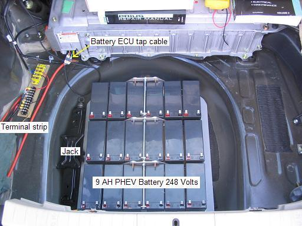
PHEV BATTERY: . The primary purpose of the PHEV battery in this conversion is not so much to guarantee longer range on electric alone, but to have a place to safely put the solar power without any risk of overcharging or over cycling the original Toyota HV battery. . The photo at right shows my added 9 Amp-Hour cells in the wheel well prior to being wired together in series.
The discharge controller feeds power into the Prius to extend gas mileage but at a low enough rate (half hour) to not confuse the Prius computers. Also, the controller will not waste energy from the OEM battery back into the PHEV battery. The only time the PHEV battery is charged is during regenerative braking, from solar power, and from over night plug in. The batteries are designed to be cycled to about 50% yielding a lifetime of about 2 years.
Bottom line: . If you want to have some solar power in the field such as for Field events, emergencies, or just watching the kids soccer match, this array has been designed to aerodynamically and asthetically match the Prius for maximum economy.
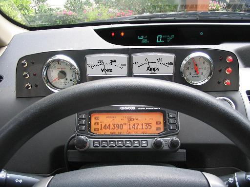
ANALOG INSTRUMENTATION: . The retro analog instrument panel (right) keeps me informed of not only the power going into and out of the Prius HV battery and solar panels, but also the economy of the gas engine via a tach and vacuum gauge. . The left meter is 150 to 300 volts and the right one is -50 to 0 to +100 amps. . (click for full size image). . This analog instrument panel is easier to use than a laptop for such displays. . The APRS ham radio below the dash is not related to this conversion but with an attached GPS provides tactical situational awareness of the positions, status and messages of similarly equipped mobiles in the surrounding area. The APRS network is linked to the internet and so you can always see where I am. Or using APRS, you can see where all the other Ham radio operators are with their bybrids.
IEEE Conference on PHEV Technology, Washington DC, 19 Sep 2007: [IEEE conference link]
My Do-it-yourself Solar PHEV was invited to this meeting in contrast to the commercial Plug-In Hybrid Conversions that were prominantly on display. We were offered a free $25 parking space. (Mine is the second from left). Only problem was, that no one told the parking lot zombie, and it took us an hour of wrangling to get out of the valet parking lot after it was over!
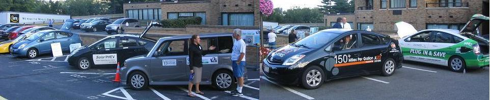

The other three Prius had 5 KWH or so(?) of added Lithium PHEV batteries costing several thousand dollars? . In contrast, my 2 KWH Lead-Acid batteries only cost about $500, and mine was charging the whole time parked in the sun, while they spent the first hour trying to find a place to plug in. Well, actually, the other Prius just plugged into 115 convenience outlets, but the E-BOX to my right was all electric and they had to find a 240 volt 50 amp outlet to plug in. They drove 100+ miles from Deleware on all-electric and the box was thirsty.
As I was driving away, a photographer came over and did a quick interview. . (Frame at right). Although he completely missunderstood the 80% State of Charge, he did capture some of the gyst of what I was saying See his video.
VEHICLE-TO-GRID: . Look carefully over the shoulder of the T-shirt guy and you will see the portable electric meter they take with them. Because, you see, the Ebox can both SOURCE and SINK energy. This demonstrates the Vehicle-To-Grid technology which has some real interesting promises for meeting peak power demand.... That is, if 75% of the Vehicles in the USA were PHEV's, then the installed instantaneous POWER capacity in those 150 million cars sitting in their parking lots all over the USA, represent FIVE TIMES the entire Electric Generating Capacity of all USA Generating plants combined!
Yet charging those 150 million cars overnight only takes 7% off the power grid at night when there is excess capacity. They estimate if we can figure out how to signal demand and pricing info to those 150 million cars, then the utilities would be willing to pay as much as $2k to $4k per car over the life of the car, to take back a few % during peak demand the next day... (I hope I got the facts right?)
 .
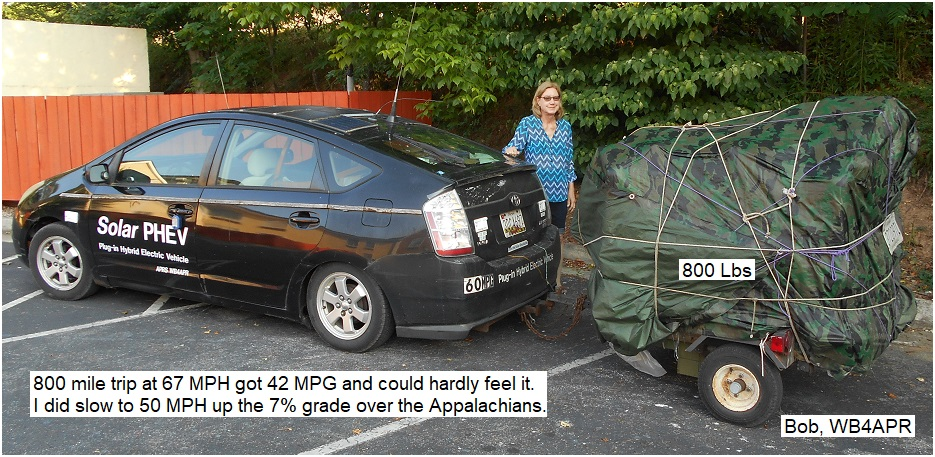
.
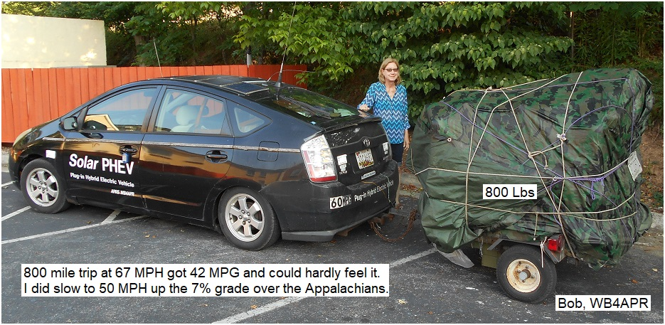
Emergency Power Trailer: A small 300 watt Solar-Scooper or Solar-Fanny provides additional power in the field. See Prius as an Emergency Power Station. But can still be used for hauling other junk when panels are collapsed.
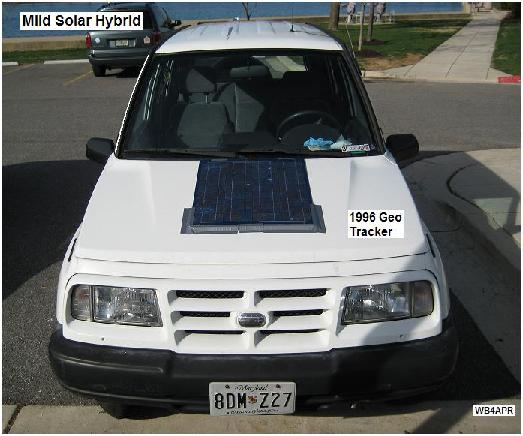
Mild Solar Hybrid: . My son's car is my second Solar Hybrid concept that attempts to reduce foreign oil dependence by improving fuel economy on a 1996 Geo Tracker. I call this a mild hybrid because it shifts some of the mechanical loads from the gas burning internal combustion engine to electrical loads and then uses solar power and plug-in techniques to make up the difference. Simply loosening the alternator and removing the fan belt improved gas mileage almost 15% from about 29 to about 33 MPG.
Of course, this eliminates the fan and water pump cooling, as well as the alternator. To mitigate the losses of these systems, a thermostatically controlled electric water pump and fan should be added. Extra battery capacity in the form of a marine deep cycle 12 volt battery also had to be added as well as a solar panel to replenish the electricity consumed on the way to work and then a simple plug-in 12 volt battery charger (1 amp) for use at night to make up for the trip home. In this photo, the solar panel is only duct taped to the hood, since the car was handed down to us from my father-in-law, and my wife wouldn't let me drill any holes in it or make any irreversable mods.
This car is a commuter car (15 mile commute, no-expressways) so its daily usage is well known and works reliably in this mild-hybrid configuration. But pushing the envelope towards multiple trips, long distances, prolonged night time driving, or rain conditions can add substantially to the electrical load and add risk to the total electrical capacity.
The Prius Inn: I believe it was *Hobbit who first used the term Prius Inn to describe the overnight accomodations for one in the right side of the Prius. Shown below is my rendition using a system of two overlapping plywood pads with strong support so that they can be used either in the full size arrangement for those over 5'6" who like to sleep flat, fully extended but with the rear seat removed, or in the short configuration by just lowering the front seat. But I prefer the Prius Hotel configuration shown later on this page.
 .
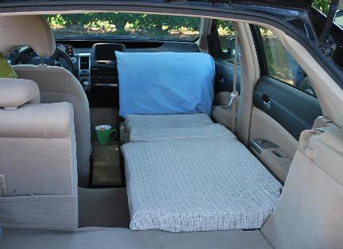 .
.
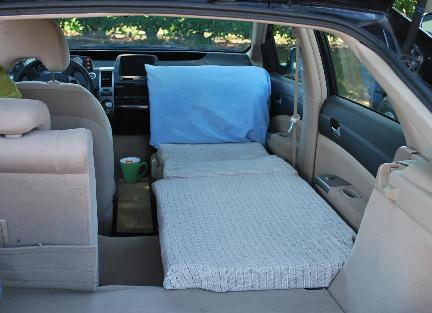 .
The full size arrangement above left provides plenty of leg, elbow and head room and involves a third pad in the center to extend the bed to a full 6 feet 2 inches in length. Although this necessitates removing the back seat (two easy to reach bolts), it is a very comfortable. By extending the length with a center pad, the original short-configuration pads with their plywood supports can still be stored in only 37 inches of storage space. Unfortunately on the day I got around to taking photos, I just happened to have the center console out, so this photo is actually not representive of normal use. Normally the center console is there.
The short configuration shown above right has the rear pad overlaping the forward pad's plywood base for strong support. This configuration has the advantage of not having to remove the rear seat and find a place for it (or leaving it at home). A wood support for the back seat supports the rear pad level with the front pad as can be seen in this rear view .
WOODIE PRIUS #2: . My second salvage Prius is rebuilt with a wooden rear-end. As of March 2010 the car has passed state inspection and is on the road. Below are the BEFORE photos.
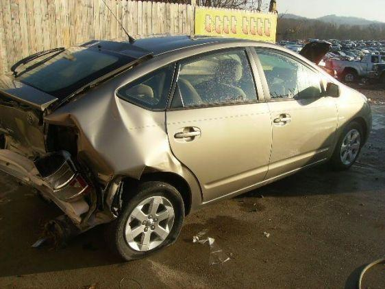 .

My local gas station called in the State inspector himself who
promptly failed it the first time. (He was making demands beyond the written law.)
But it really wasn't
completely finished and he did not even look at the inside of the trunk.
We disagreed on whether the bumper can be laminated of four 1x6 Oak planks or has to
be solid 3x6 and what "has to be the full width of the car" means... I won on
both accounts... given that the
original bumper was only 51" wide and this Oak one is 53".
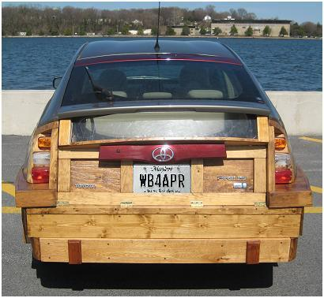
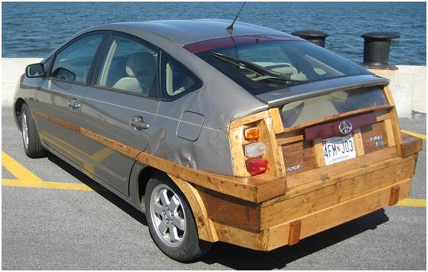
There does not appear to be much of an aerodynamic penalty
since I'm still getting about 60 MPG.
Its was a 2005 with only 19K miles on it when I got it for $6500 back in 2007.
It sat in
the yard for 2 years awaiting wife's permission to work on it. Someone even captured
it on the
There-I-Fixed-it
site. But I didn't go to the extremes as this guy did
back in 1943!
P.S. After these photos were taken I did go and have an autobody shop smooth out the metal
all around for a nice looking job (and $1100 sheesh)...
PRIUS HOTEL: The better arrangemnt for sleeping is for two and is simpler than the Prius Inn. Rather than the three custom boards to make the front seat level, the Prius Hotel simply slides the seats forward and installs two boards to extend the back seats as shown below. Four small wooden supports are screwed to the plastic trim to support the boards. The rear of the boards rests on the headrests of the folded down rear seats. This arrangement gives 6' 4" headroom. Since I used Kakhi pants for the covering material, I left the pockets in place. These cover about 1" of hard foam. For sleeping, the entire area then is covered with a suitable foam mattress.
 .
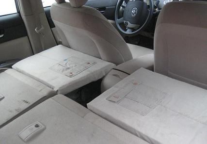 .
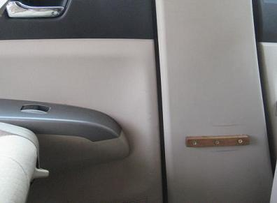 .
.
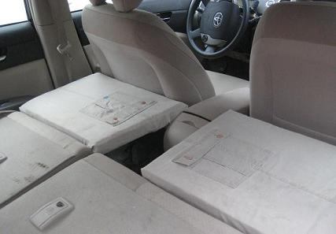 .
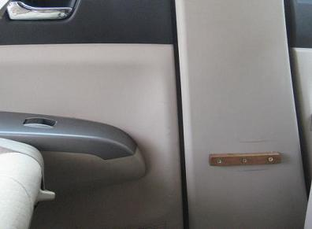 .
 .
.
HOME FROM COLLEGE: As a temporary add-on to get #1 son back from college, I folded the tail-gate down and half-lifted the hatch and added side-boards and another back-piece to increase the storage space by about 9 cubic feet. If used for sleeping, this configuration could be called the Prius Challet with over 7' of headroom!
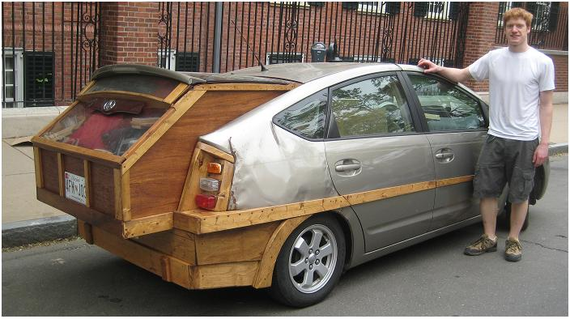
This is only a temporary configuration for hauling long distances in decent weather. It comes apart into three stackable pieces of wood, and then the tail-gate and hatch close normally for aerodynamic travel. But the interesting thing is, that still a carpet and one book shelf did not fit. So we added it on the top. The result is one of the worst looking aerodynammic arrangement you can imagine. Yet over the 300 mile trip on cruise control at 60 MPH, we got 46 MPG. Thats down about 10 MPG from normal, but still not bad compared to some lead-footed Prius drivers.
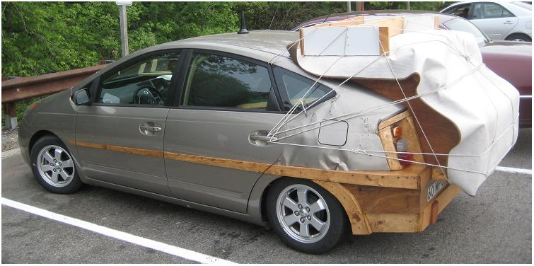
Re-cycled Prius #3: The next one below I snagged in Jan 2010 for my daughter's graduation present. Apparently crushed by a fallen tree. It is a 2005 with 92K miles on it. It sat in the junk yard for months but the junkyard dog would not go below $5500 parts value for it, since it was in 100% running condition and all normal crash-parts were perfect, just the squashed roof...
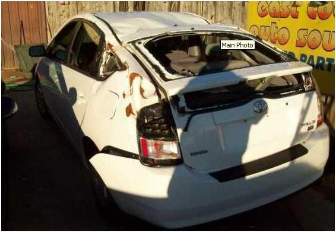

Now 18 months later, on the right above, I finally got some time to work on it (still not water proofed) but you can see the idea. These solar panels are mounted to two wooden rails (gray) curved to match the roof line which let the larger panels extend over all the damaged area and almost out over the doors. (see rails in work). In the link photo you can see how the 3/8" wood was kerfed to curve and then long strips of wood added underneath on the outside edge to build them up to nearly 1.5" thick to fit the 3D curves of the roof line. The 6 wood wood blocks in the first link are just dimensioned supports to push up the solar panels into a proper curve from the moonscaped out-of-curve crushed roof, instead of just laying flat.
The left rear quarter panel still has lots of wrinkles. A little Bondo will fix that up someday... Notice, to date, other than a lot of sledge-hammering pounding, jacking and pulling, not one bit of normal "body work" has been done. No bondo, no filler, no nothing. Just hide it all under the solar panels, and then took a paint brush and white Rustoleum paint to the left rear quarter panel. Oh, and if you look closely, you can see that the left rear quarter window is a sheet of plywood painted black! (Oh, and the lower-half rear-window is also black painted plywood)... Now that I got it through safety inspection, I will use that plywood as a template to make it again out of 1/4" plexiglass to improve the view.
OOPS, I forgot. Yes, It is a new taillight and new piece of glass in the rear hatch. Unfortunately, before I got started on it, it sat out in my secret hiding place (from the wife) behind the local 7-11 for 6 months and vandals sledge-hammered out the front window, and hammered off the pax-side rear view mirror. But those were simple replacement items.
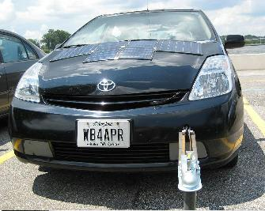 TOWING: DO NOT DO THIS! Towing the Prius on anything other than front wheels off the ground is not recommended. However, for moving my projects around the neighborhood and back (wife won't allow unfinished projects in the driveway), I made a small tow bar that configures to the front bumper hook and allows me to tow the unregistered Prius to and from its nearby hiding place as shown below:
The parallel angle irons extend beyond the pivot point to maintain solid contact with the full width of the tow hook coming out of the bumper. This assures that there is little left to right movement so that the towed car will track the towing car. See the side view and a closer view. You can see that the bolt is tightly compressed to an internal spacer and 4 washers to keep the tight spacing for proper tracking.
WARNING: It worked a few times, but once while turning a corner (too tight) the Toyota tow-bolt simply snapped in half. The ring which is welded on the end simply broke its weld. The towed prius was now free to follow its momentum and go wherever it wanted! Fortunately, I was only going maybe 3 MPH and simply pulled the towing prius out of the way to the left, jumped out the drivers door, and stood in front of the coasting prius and by hand slowed it to a stop just a few feet off the road. SCARRY indeed.
PARKING PAWL: and then you have to put the towed Prius into Neutral. Which of course is impossible to do unless you can get it to READY state (and if you can do that, why do you need to tow it?). Anyway, get into neutral, set the parking brake and then remove the fuse under the hood that powers the parking pawl. Its a 30 amp fuse that I think it is labeled PCON MOTOR. You will get the red-triangle of death and check-engine lights, but they will go away (eventually) when you replace the fuse.
 ALTERNATIVE ENERGY: We can do it. Just reducing our oil demand by 25% will
prevent $200 MILLION per day from going to the destabilization of the Middle East.
That keeps a lot of money out of the hands of the terrorists. Shown to right is my
daughter's 2004 high school environmental project using a solar panel and a car battery
to run her room off-grid. I woke up to the very favorable economics of grid-tie
systems (compared to the inefficient and non-competative battery storage systems)
during the summer of 2009 and this has now morphed into plans for my
8 KW Grid Tie system. One third of the
final system shown below is temporarily propped up in the backyard awaiting approvals (and city-hall
issues(see the web page)).
ALTERNATIVE ENERGY: We can do it. Just reducing our oil demand by 25% will
prevent $200 MILLION per day from going to the destabilization of the Middle East.
That keeps a lot of money out of the hands of the terrorists. Shown to right is my
daughter's 2004 high school environmental project using a solar panel and a car battery
to run her room off-grid. I woke up to the very favorable economics of grid-tie
systems (compared to the inefficient and non-competative battery storage systems)
during the summer of 2009 and this has now morphed into plans for my
8 KW Grid Tie system. One third of the
final system shown below is temporarily propped up in the backyard awaiting approvals (and city-hall
issues(see the web page)).
Wind Power: The first-started and last-to-finish
part of my home energy system is installing a
400W wind generator at the top of the tree to the right. Last year I finished installing
permanent aluminum ladders to the 80 foot level. The problem preventing further progress
for many years
was that I had no practical use of the 24 VDC generated. Putting it into batteries is so
inefficient, it costs more than the energy is worth. But!...
This last year (2009) has now finally seen an easy
solution to that problem. Now at least two companies are selling micro-grid-tie
inverters rated at about 200W each for about $200. This means I can backfeed my wind
power also.. even though it is small, every bit helps.
Bob Bruninga, WB4APR APRS Engineering LLC
{kind=link}
{kind=link}
{kind=link}
{kind=link}
{kind=link}
{kind=link}
{kind=link}
{kind=link}
{kind=link}
{kind=link}
{kind=link}
{kind=link}
{kind=link}
{kind=link}